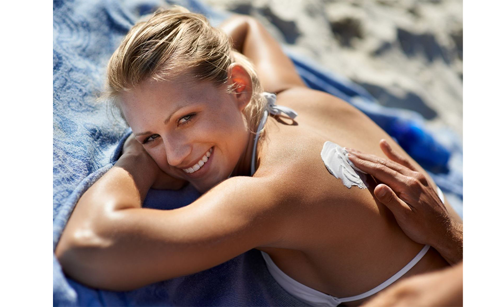
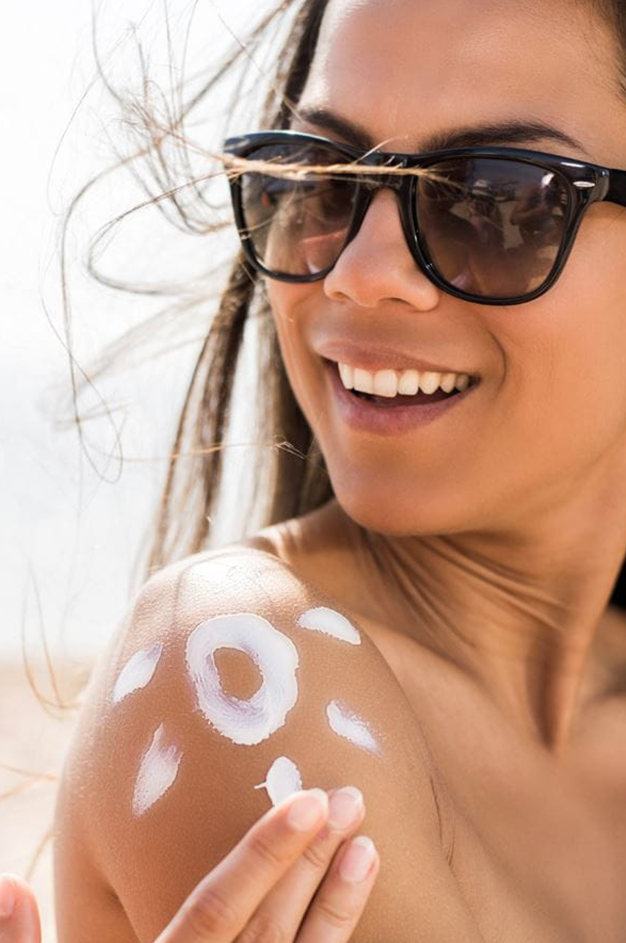

내 피부에 맞는 자외선 차단 지수를 어떻게 확인해야 할까요?
정확한 자외선 차단 지수를 선택하려면 다음과 같은 기준을 고려해야 합니다.
햇빛 아래 얼마나 있을 것인가, 피부가 어떤 타입인가, 노출되는 장소가 어디인가,
노출되는 시간대는 언제인가, 품질이 좋은 크림일수록 차단에 효과적입니다
중요: 선 크림에 표기된 자외선 차단 지수를 확인해보세요.
자외선 차단 지수(SPF)
자외선 차단 지수(SPF)는 차단 효과를 결정짓는 요인 중 하나입니다. 니베아 자외선 차단제로 피부를 보호해 보세요. 우리는 머리, 눈동자 색 등에 따라 각자 다른 피부 특성을 지니며, 이에 따라 필요로 하는 SPF 지수가 다릅니다.
중요: 각자의 피부타입에 맞는 SPF는 보호시간에 따라 다릅니다. 피부 타입과 자외선 노출 지역, 계절에 따라 다르지만, 평균 5-30분입니다.
피부 타입별 자외선 차단에 대해 여기서 더 알아보세요.
x
이 공식을 통해 자신에게 맞는 자외선 차단 지수를 확인할 수 있습니다.
자신에게 맞는 자외선 차단제품를 고르고 야외활동을 걱정없이 즐기세요.
자외선 차단 지수는 다음과 같이 세 단계로 분류됩니다
: 낮음 (6-10), 보통 (15-25), 높음 (30-50), 매우 높음 (50+).

자외선 필터
무기 차단제
자외선 차단 제품에 포함된 대표적인 무기 차단제로는 티타늄디옥사이드와 징크옥사이드가 있습니다. 이러한 자외선 필터는 햇빛을 반사하고 산란하는 물리적 작용을 원리로 자외선을 차단합니다.
화학 차단제
이와 더불어, 오직 자외선을 흡수하는 방식으로만 자외선을 차단하는 화학적 차단제가 있습니다. 이 경우, 해로운 자외선은 흡수되어 열에너지로 전환됩니다. UVA와 UVB를 모두 효과적으로 차단하기 위해서는 서로 다른 종류의 자외선 필터가 혼합되어야 합니다. 자외선 차단은 물론이고, 피부감촉 및 내수성 등의 여러 기준 또한 함께 고려하여 적절한 필터를 선택해야 합니다.
DNA 손상 피하기
UVA 자외선은 피부에 어떤 고통을 일으키지는 않지만, 진피층까지 매우 깊숙이 침투하여 활성산소를 발생시키고 장기적으로는 세포와 DNA에 부정적 영향을 미칠 수 있습니다. UVB의 경우에도, 피부를 그을리게 하는 등의 영향을 미칠 수 있습니다. 자외선 차단 제품을 사용하여 UVA와 UVB의 부정적 성질로부터 피부를 보호해 보세요.
자연스럽고 오래 지속되는 태닝
자외선 차단 지수가 높은 제품으로 피부를 보호하면, 피부가 자연스럽게 그을리는데 시간이 더 걸리지만, 위험요소가 적고 건강할 뿐만 아니라, 태닝 효과를 오래 지속시킬 수 있습니다.